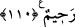

KALBLERİ, KULAKLARI VE
GÖZLERİ MÜHÜRLENENLER
101. Biz bir âyetin yerine başka bir âyeti getirdiğimiz zaman -ki Allah, neyi
indireceğini çok iyi bilir- “Sen ancak bir iftiracısın” dediler. Hayır; onların çoğu
bilmezler.
102. De ki: Onu, Mukaddes Rûh (Cebrail), îman edenlere sebat vermek,
müslümanları doğru yola iletmek ve onlara müjde vermek için, Rabbin katından
hak olarak indirdi.
103. Şüphesiz biz onların: “Kur’an’ı ona ancak bir insan öğretiyor” dediklerini
biliyoruz. Kendisine nisbet ettikleri şahsın dili yabancıdır. Halbuki bu (Kur’an)
apaçık bir Arapçadır.
104. Allah’ın âyetlerine inanmayanlar yok mu, şüphesiz Allah onları doğru yola
iletmez ve onlar için elem verici bir azap vardır.